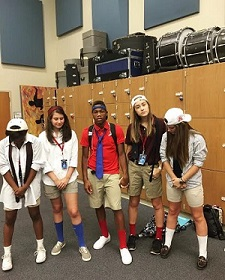

I was born in Charlottesville, Virginia at the UVA hospital system. I weighed 8 pounds and 12 ounces. If you ask me, I was a pretty big baby. I was raised in a pretty suburban area not too city like but not too rural like either. I went to an elementary school called Stony Point Elementary. I attended that school for kindergarten and a little bit of the first grade. I enjoyed my childhood in the north if you will because unsweet tea and anything not southern was big where I was. I then moved to South Carolina mid-2005 to Greenville. I always moved a lot when I was a kid. I’ve lived in Greenville, Greer, moved to New Jersey for a few months, back to Greenville, back to Virginia, to Easley and back to Greenville. It’s so crazy just to think about that if you ask me. I grew up playing a lot of different sports and participating in a lot of activities such as cheerleading, dance, student council, morning news, safety patrol, volleyball etc. I always stayed busy as a kid and well I still always stay busy. If you asked my mom she’d tell you, busy is my middle name.
I am currently 17 years old. I live with my mother, 24 year old brother, 3 year old brother and my 2 year old sister. I love spending time with my siblings because it’s just such a cool experience to have fun with such a wide age range. My older brother is a tattoo artist and he works in a shop located in Greer, SC. My mother works at Lowes on Woodruff rd., as a department manager. As a kid and even now I basically live there. Everyone who has worked there for years know me by name and everything, I love it. I sometimes just go sit in my mom’s office and talk to the people near her desk etc. I’ve mixed paint there, filed papers and even decorated offices. It’s a pretty cool experience especially if I ever decide to work there I already know so much. I babysit a lot but it’s okay because most of the time I enjoy it, but other times I do not. It’s okay though because no matter what it’s all out of love. I love my family so much because we’ve been through a lot but that only brings us closer.
I participate in yearbook and partially drama here at school. My hobbies consist of photography, dancing, reading occasionally, hanging out with friends, watching movies, taking walks and now I’ve started running for fun. Since I quit band, I tend to have a bit more free time so in that time I put myself out in to the community. For example, I signed up to volunteer with friends at the Greenville Humane Society. I love animals with a passion and I’m so excited to start. I also am having my friend sign me up with her and her mom at their gym so I can begin working out. I always want to work out but never have the motivation, so with my friend being with me I hope for it to make a difference. There are things that I want to take up like swing dancing and ufc fight training but haven’t had the time to do so yet. I attend church on Wednesdays and Sundays at Newspring Church at the Greenville campus. I’ve been going there since December of 2014 and haven’t stopped since. Wednesday especially is my favorite day of the week because after school I usually meet up with my friends and we eat, talk and hang out until it’s time to go to church and then we all go together. It’s just such a great time and I really enjoy having friends walk with me through my path in religion. It’s always nice to have people to push you forward instead of hold you back.
In the future for me is after high school because this year I am a senior. I tend on going to a four year college to major in photography. Depending on where I attend depicts what minor I’m going to pursue. I have started applying to colleges but honestly it’s such a long drawn out process I just want to stop. I really am hoping for either The Art Institute of Charleston or Winthrop to accept my applications because that’d be my all I swear. I’m kind of nervous for college just because it’s going to be a huge change but I’m excited. I really want to take photography to a new level so going to school for it is really going to make that happen for me and I’m so happy. I initially want to do community photography but I also like the idea of labor and delivery photography. I love catching moments where people are not posed and or worried about looking good but doing the things they love. I love action photos and reaction photos because it’s a photo of what’s going on at that moment and when you look back you can remember the good times you had experienced just in one picture.